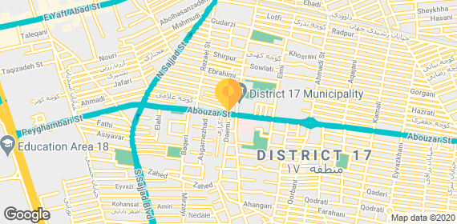

گوارش کبد آندوسکوپی
گوارش کبد آندوسکوپی
 غدد و متابولیسم
غدد و متابولیسم گوش حلق و بینی
گوش حلق و بینی مغز و اعصاب
مغز و اعصاب
 خون و آنکلوژی
خون و آنکلوژی
 زنان و زایمان
زنان و زایمان
 گوارش کبد آندوسکوپی
گوارش کبد آندوسکوپی
 غدد و متابولیسم
غدد و متابولیسم
 گوش حلق و بینی
گوش حلق و بینی
 مغز و اعصاب
مغز و اعصاب
 خون و آنکلوژی
خون و آنکلوژی

.jpg)
جواد رستگار مقدم
فوق تخصص گوارش کبد و آندوسکوپی شماره نظام پزشکی:۶۲۰۰۵
تجربه
۳۹ سال
اولین نوبت آزاد
۲۵ آذر
پرداخت آنلاین
دارد
نوبت بگیر
انتخاب مطب
آدرس مطب دلخواه را برای مراجعه انتخاب کنید.
- امروز ۲۵ آذر
- چهارشنبه ۲۶ آذر
- پنجشنبه ۲۷ آذر
- جمعه ۲۸ آذر
- شنبه ۲۹ آذر
- یکشنبه ۳۰ آذر
لطفا آدرس مطب خود را انتخاب کنید.
۴.۵
نظر حدیثه:
دکتر بسیار عالی و خوبی بود و فوق العاده خوش اخلاق و کاربلد.
اطلاعات مطب
روزهای حضور

آدرس مطب ۱ :
خیابان پاسداران، ابتدای بوستان نهم، ساختمان مهر، پلاک ۱۳۳، طبقه ۱، واحد۳تلفن گویا : ۲۲۲۲۲۲۲۲



.png)
نظرات کاربران (تعداد کل نظرات :۳۵)
در این قسمت شما می توانید تجربه مراجعه کاربران دیگر به مطب آقای دکتر جواد رستگارمقدم را بخوانید.
با توجه به معاینه هایی که انجام دادن و داروهایی که دادن تا به الان که راضی ام و باید ازمایشاتم و ببرم بازهم براشون تا ادامه روند درمان و پیگیری کنیم . من تازگی مراجعه داشتمو به من معرفی کرده بودن دکتر را - خوشحالم پزشکی هستن نزدیکی ما که در کارشون خوبن و نیاز نیست خیلی راه های دور بریم و دسترسی راحت تری دارن
با توجه به معاینه هایی که انجام دادن و داروهایی که دادن تا به الان که راضی ام و باید ازمایشاتم و ببرم بازهم براشون تا ادامه روند درمان و پیگیری کنیم . من تازگی مراجعه داشتمو به من معرفی کرده بودن دکتر را - خوشحالم پزشکی هستن نزدیکی ما که در کارشون خوبن و نیاز نیست خیلی راه های دور بریم و دسترسی راحت تری دارن
با توجه به معاینه هایی که انجام دادن و داروهایی که دادن تا به الان که راضی ام و باید ازمایشاتم و ببرم بازهم براشون تا ادامه روند درمان و پیگیری کنیم . من تازگی مراجعه داشتمو به من معرفی کرده بودن دکتر را - خوشحالم پزشکی هستن نزدیکی ما که در کارشون خوبن و نیاز نیست خیلی راه های دور بریم و دسترسی راحت تری دارن